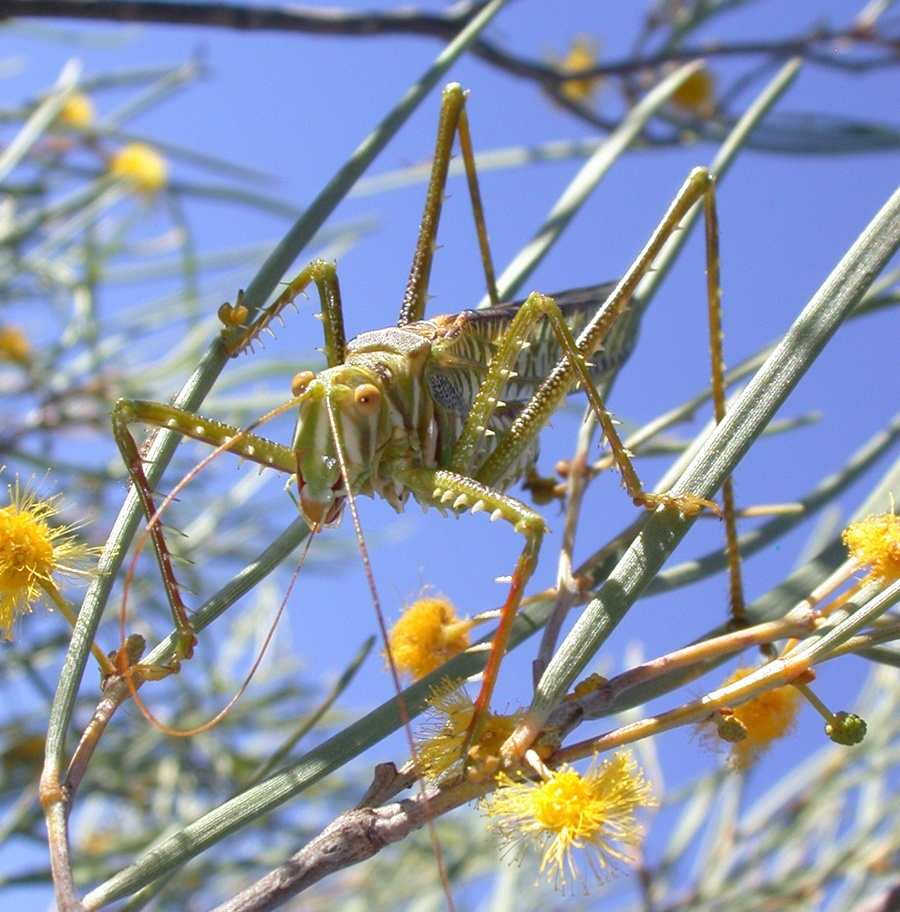

Imita el canto de una cigarra hembra receptiva para atraer a los machos y capturarlos.
Es un insecto depredador que aprovecha las señales acústicas de las cigarras para localizar a sus presas.
Habita en el interior árido y semiárido de Australia.
¿Cómo caza?
Reproduce con precisión señales acústicas de las hembras. Los machos que se acercan atraídos por el sonido se convierten en presas.
Sentidos
